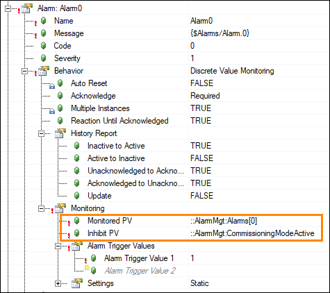
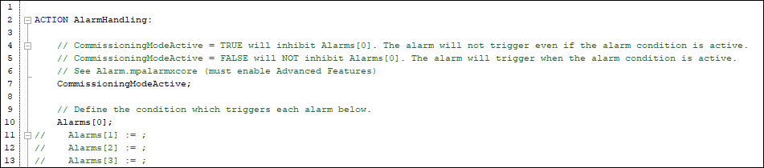

mapp AlarmX Framework - Inhibit Alarms
Decide whether each monitoring alarm should be inhibited at any point. If so:
- Assign an Inhibit PV to the alarm within the Alarm List of the mapp AlarmX configuration.
- This is an advanced parameter, so remember to click the icon.
- In the AlarmHandling.st action, write an IF statement to set the Inhibit PV according to a specific condition.
- It is common to use the same Inhibit PV to inhibit multiple alarms. For example, you could have a “maintenance mode” bit which if True would simultaneously inhibit any alarms that should not be monitored during machine maintenance.
An example of using the Inhibit PV is built into Alarm0. The condition to set CommissioningModeActive to True is not yet defined (this needs to be based on the application).

